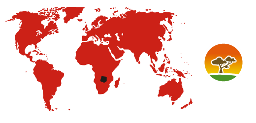

EN: Żyrafa siatkowana
EN test info!
Rząd:parzystokopytne
Rodzina:żyrafowate
Charakterystyka

Kolor i wzór cętek zależy od obszaru geograficznego. Żyrafy to najwyższe współczesne ssaki, osiągające do 5 metrów wysokości, z czego do 2,5 metra stanowi wyjątkowo długa szyja.
Tryb życia

Żyją w grupach rodzinnych, którym przewodzi samiec. Hierarchię ustalają samce podczas długich walk pomiędzy sobą na szyje. Należą do przeżuwaczy. Żywią się głównie liśćmi akacji, neutralizując zawarte w nich toksyny w wątrobie.
Rozmnażanie

Ciele ssie matkę zwykle do 9 miesiąca, po tym okresie zmniejsza się opieka matki nad potomkiem.
Zasięg i siedlisko

Słabo zalesiona sawanna.
Ochrona

Zagrożenia: Utrata siedlisk oraz polowania. Mimo, że globalna populacja jest stabilna, obszar na którym występuje kurczy się.
Ciekawostki
- Żyrafa przemieszcza się inochodem – poruszanie kończynami po jednej stronie ciała w tym samym czasie (prawe lub lewe), po czym następuje zmiana strony na przeciwną.